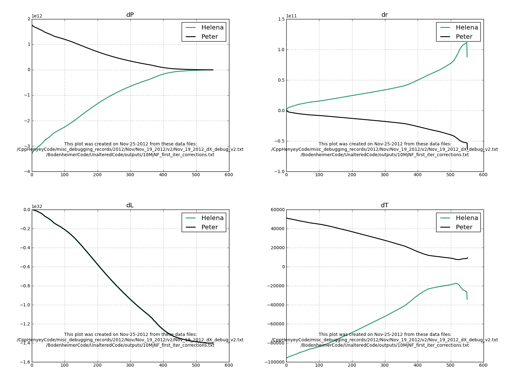
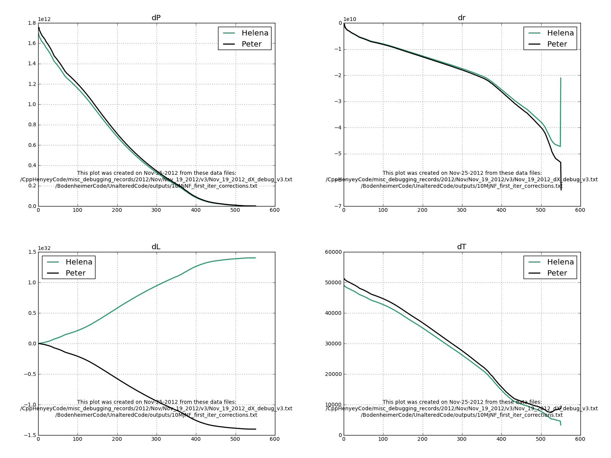
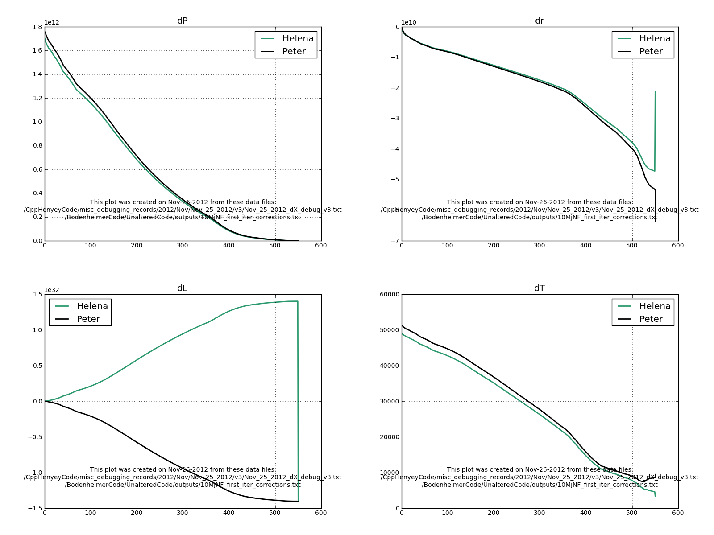
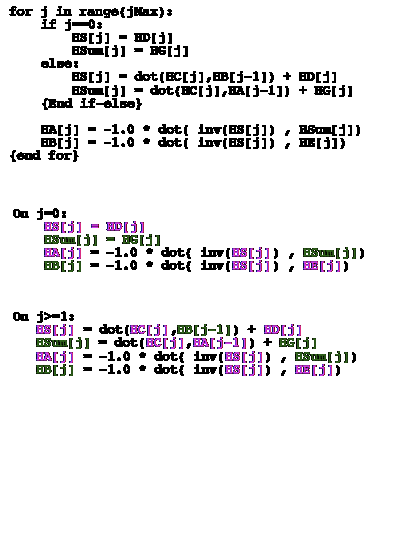

Date & Time: Nov. 25, 2012
Location: Campus
Computing context: /Desktop/Research/CppHenyeyCode, /Desktop/Research/BodenheimerCode/UnalteredCode/
Continuing from last time:
The codes still produce very different correction profiles. I think the first thing to check in Helena is what it's returning from atmos.cpp as the Msurface, Tsurface, etc. values-- make sure those are defined correctly relative to Peter's code.
From Peter's code:
Rinput: 87542104809.4471
Linput: 1.402235808868283E+032
Ratm: 10585274057.0057
Patm: 142586276.993159
Tatm: 7092.18036444053
RhoSurface: 3.447663183948292E-004
From Helena:
Rinput: 87542104809.4471
Linput: 1.402235808868283e+32
Rout-Rsurface: 1.05844e+10
Psurface: 1.4343e+08
Tsurface: 7102.12
RhoSurface: 0.00034644
From identical L and R inputs, the two codes produce roughly the same atmos output values (though not absolutely identical values). The differences are at the level of one part in ~100 to 1000. I wouldn't think that would be a significant difference, but it maybe it could cause the outer CDEG values to differ enough to create the correction profile differences I've been seeing.
Here are two plots of the correction profile differences (Figures 1 and 2).

The luminosity
correction profiles agree perfectly, but nothing else does.
Figure
1:

The luminosity
corrections differ by a factor of -1.0, but all of the other
corrections agree pretty well... or at the very least, have the same
sign throughout. There's definitely some wonkiness going on at the
outer boundary with the dR and dT profiles, but I'm not sure how
important that will end up being in the overall march towards
convergence.
Figure
2:
What did I change in Helena b/w v2 and v3? I think it might have been whether/how I multiplied the CDEG values by -1.0 or not... that would have been w/in the Henyey matrix inversion routine...? Let's take a look at that code.
I checked my code, and played around with setting some of the outer CDEG values (the ones involving dL values) equal to -1.0* their supposed values, and could not find the combination that would get all four dX profiles to line up properly. For example, setting the outermost luminosity correction value to -1.0* its original value produced the following suite of dX profiles (Figure 3):

Figure
3
The take-home point from Figure 3 is that it's not just the outer boundary conditions that are forcing the dL profiles to mirror (rather than match) each other. It's something systematic throughout the interior of the star (and the CDEG values at each mass cell).
Today's work:
From Figure 3, I suspect that the issue is a sign error somewhere in the B matrices, which themselves depend on the S and InvS matrices. When I get back up on campus, let's have a look at those in both the Helena and Peter results, and see if I can track this down. It might not be that, of course. In which case... maybe I can just multiply the dL profiles that my code calculates by -1.0 and claim I've fixed it?
It turns out that the sign error is entering thru the A matrices, which themselves depend on the S and Sum matrices. I've been trying to figure out where, exactly, the sign error is getting into those , w/ limited success. Figure 4 shows my scheme for tracking how sign differences propagate thru the code.

Schematic illustration
of how sign differences in the CDEG matrices propagate thru the
portion of the code that calculates the dX values. Pink = opposite
signs in Helena and Peter. Green = same signs in Helena and Peter.
Figure
4:
From Figure 4, I see that sign differences propagate consistantly thru that "for loop." The HA values will always be opposite signs, and the HB values will always be of the same sign compared b/w the two codes' results. Now, let's track how those Sign differences effect the dX calculations signs.
For all of the values of j:
HS[j]
HSum[j]
HA[j]
HB[j]
for j in jrange:
HdX[j] = dot(HB[j],HdX[j+1]) + HA[j]
We know that the first (outermost) HdX values have are of opposite sign, since HdX[outer] = HA[outer], and HA always has the “wrong” sign.
So, we should get dX profiles where ALL of the values are the "wrong" sign. Instead, we get dX profiles that have the SAME signs for the R, P, and T corrections, but are OPPOSITE signs only for the L corrections. Why is this happening?
Note: the G2 values are quite different b/w the two codes (I think...) <-- the eqn dealing with the radius stuff.
After more digging:
**The problem MUST be in the Gs, b/c the invS values' signs match throughout the interior of the star.**
**Or, the problem MUST be in the HSum values (which depend on G, C, and A).
For all variables BESIDES the luminosity, the bolded values are so much larger than the italicized ones that differences b/w the codes HA values don't really register in the results:
HdX[j] = dot(HB[j],HdX[j+1]) + HA[j]
The G values at j=0 (and any errors in them) cascade throughout the entire calculation. I wonder if "fixing" the j=0 G values from Helena will get the dX profiles to agree? Answer: doing that quick kludge in the python script didn't get the dX profiles to agree, so...
At j=0, G2 (radius) and G4 (temperature) don't agree.
After I get the dX profiles from the two different codes to agree with each other...
Check that Helena successfully converges the 10Mj no fusion model
Compare the converged model to Peter's results
Check that Helena and Peter also produce the same converged model with dTime > 0
Keep dTIME = 0, just for comparing the CDEG and variable correction values that get calculated on the first convergence loop to see if they're the same b/w the two codes.
After you get those results to agree, change dTIME > 0 in both codes, and check that all the relevant profiles still agree. Probably this will provide plenty of fodder for debugging...